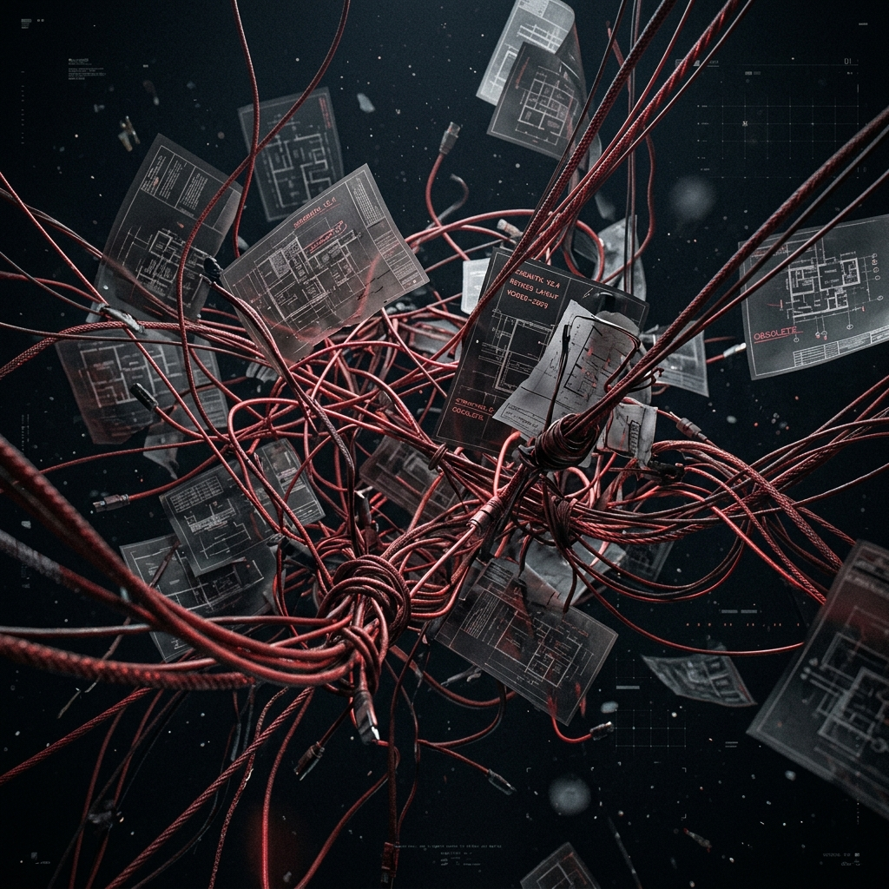
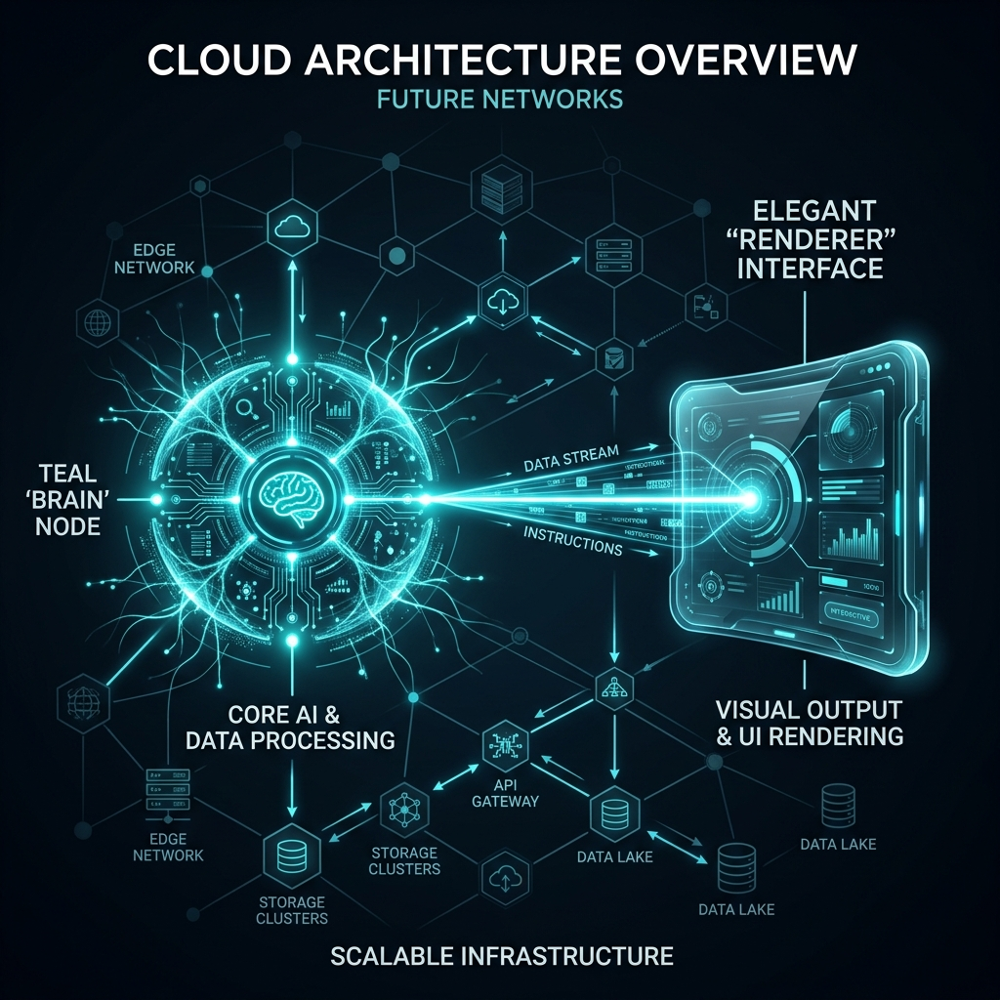
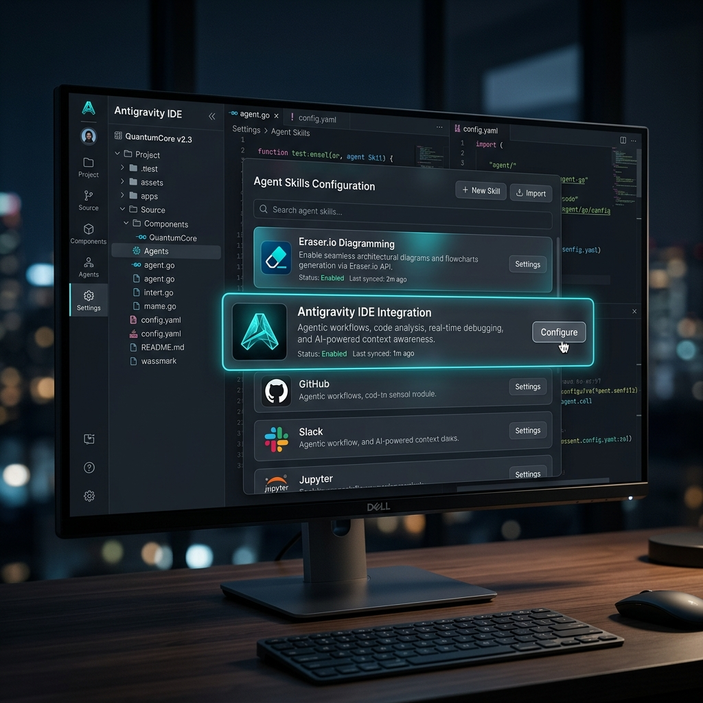

EraserGravity
01 // The Problem
Modern infrastructure moves at the speed of code, yet our diagrams remain frozen in time. Manual drag-and-drop networking tools create a dangerous disconnect between your live cloud environments and your architectural documentation.
When visual intent and deployed reality drift apart, resolving incidents becomes an exercise in archaeology. We need architecture diagrams that are generated, not drawn.


02 // The Architecture
A hybrid workflow designed for absolute precision and speed.
The Brain (Antigravity Agent)
Context-aware LLM reasoning. Under the hood, it parses user prompt topology and structurally translates it into logical networks.
The Renderer (Eraser.io)
Transforms raw, generated Domain Specific Language (DSL) into stunning, standardized architectural visualizations instantly.
03 // Eraser.io Rendering Capabilities
Antigravity generates the pure code topology, but Eraser.io brings it to life. It natively renders complex Architecture-as-Code into beautiful, standardized diagrams complete with rich visual elements.
🧩 Smart Elements
Automatically maps logical concepts to standard networking shapes (Databases, Load Balancers, Gateways) using simple bracket syntax like [Master DB].
🎨 Rich Icons
Supports thousands of tech-stack icons directly embedded into nodes. From AWS and Azure logos to generic IT symbols, it instantly communicates service functionality.
🖼️ Embedded Imagery & Grouping
Beyond basic shapes, Eraser.io can render custom images and complex grouping bounding-boxes to illustrate multi-layered cloud native environments exactly as envisioned.
04 // The Unlimited Bypass
Eraser.io imposes a 5-credit limit for its native AI diagram generation. EraserGravity renders this irrelevant.
By leveraging our local Agent's superior reasoning, we construct the Eraser DSL string entirely clientside. We then pass this pure code string to Eraser's standard rendering pipeline, completely bypassing the AI paywall. Infinite generation, zero cost.
05 // Technical Installation
Zero-friction setup. Plug the context engine straight into your environment.
Access MCP Config
Open your Antigravity IDE and navigate to the root directory where the agent runs, or directly open your global `mcp.json` settings.
Install Eraser Node
Run the installation script in the IDE terminal to attach the Eraser diagramming module.
# Add Eraser MCP integration > npx skills add eraserlabs/eraser-io
Bind the Server
Add the Eraser capabilities payload structure into your workspace configuration. The agent will automatically detect and warm up the new endpoints.
# mcp.json configuration { "mcpServers": { "eraser": { "command": "npx", "args": [ "-y", "@eraserlabs/mcp-server" ] } } }

06 // Conclusion
EraserGravity bridges the gap between infrastructure thought and visual reality. By merging agentic generation with deterministic rendering, architecture diagrams are no longer drawn—they are deployed.
10-Slide Deck Generated Locally